Shiwa
Shiwa · Iwate
Shiwa
Highlighted on the Iwate map.
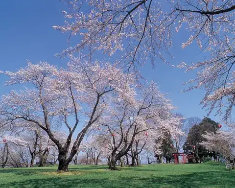
Stay
本野旅館
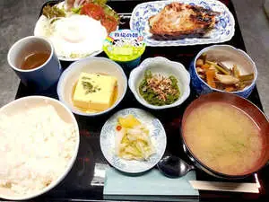
Motono Ryokan
Ryokan inn in Shiwa, Iwate.
天然温泉 ラ・フランス温泉館 ホテル湯楽々
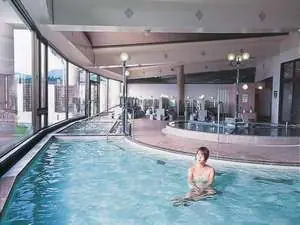
Tennen Onsen Ra Furansu Onsen Kan Hoteru Yu Rakuraku
Hotel in Shiwa, Iwate.
Dining
中国料理 jiu
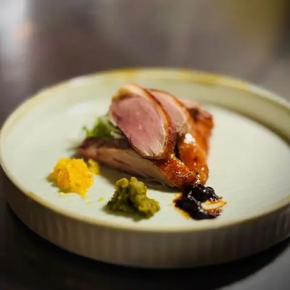
Chuugokuryouri Jiu
Chinese restaurant in Shiwa, Iwate.
拉麺太极
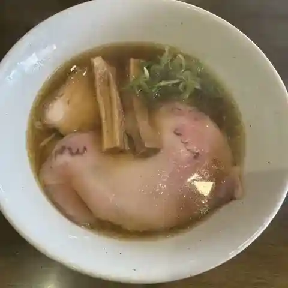
Raamen Ta
Ramen shop in Shiwa, Iwate.
たかのはし
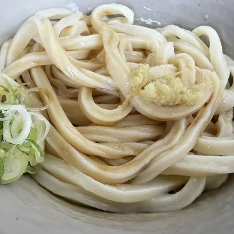
Takanohashi
Udon restaurant in Shiwa, Iwate.
はらぺこ
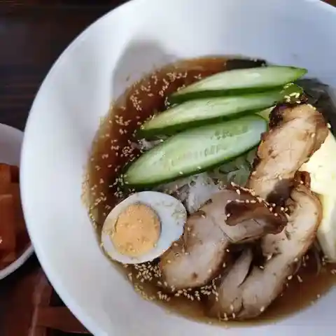
Harapeko
Soba restaurant in Shiwa, Iwate.
AZUMANESOKO
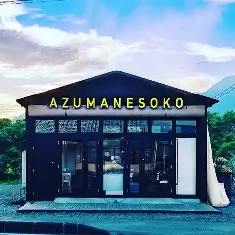
Azumanesoko
Gelato and ice-cream shop in Shiwa, Iwate.
おひさま食堂ひなた家
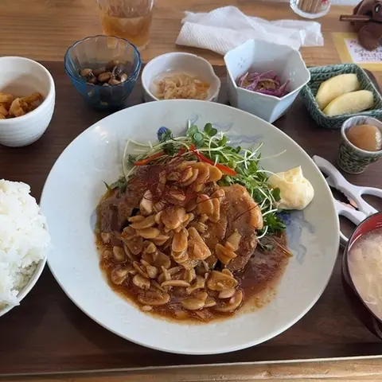
Ohisama Shokudou Hinata Ie
Shokudo diner in Shiwa, Iwate.
ルッシュ
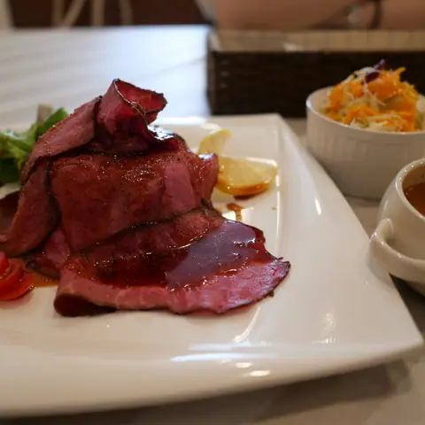
Russhu
Yoshoku (Western-style) restaurant in Shiwa, Iwate.
江釣子屋 志和稲荷店
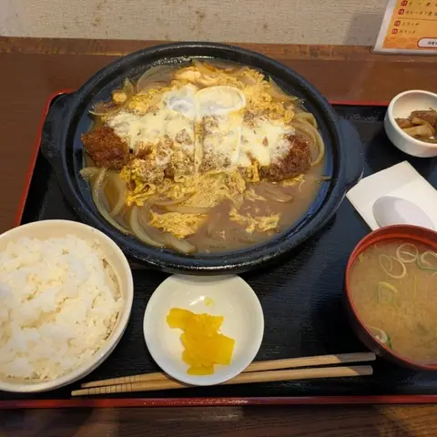
Ezuriko Ya Shiwa Inari Mise
Seafood-bowl restaurant in Shiwa, Iwate.
紫波サービスエリア（下り線）スナックコーナー
Shiwa Saabisueria ( Kudari Sen ) Sunakkukoonaa
Gelato and ice-cream shop in Shiwa, Iwate.
麺処 いっちょう
Men Tokoro Itchou
Ramen shop in Shiwa, Iwate.
中華食堂 彩々華
Chuuka Shokudou Saisai Hana
Chinese restaurant in Shiwa, Iwate.
満腹工房 福龍
Manpuku Koubou Fuku Ryuu
Shokudo diner in Shiwa, Iwate.
天狗寿司
Tengu Sushi
Sushi restaurant in Shiwa, Iwate.
ヴィラ工房 紫波店
Vira Koubou Shiwa Mise
Shokudo diner in Shiwa, Iwate.
わかさやアイスクリームガーデン
Wakasaya Aisukuriimugaaden
Gelato and ice-cream shop in Shiwa, Iwate.
よかろ
Yokaro
Yakiniku (grilled meat) restaurant in Shiwa, Iwate.
産直センター あかさわ
Sanchoku Sentaa Akasawa
Gelato and ice-cream shop in Shiwa, Iwate.
じゃじゃめん 八番
Jajamen Hachiban
Noodle shop in Shiwa, Iwate.
七久保食堂
Shichi Kubo Shokudou
Shokudo diner in Shiwa, Iwate.
ヨンハチサンニー ザ シュガー コーヒー アンド クレープス
Yonhachisannii Za Shugaa Koohii Ando Kureepusu
Crêpe shop in Shiwa, Iwate.
御食事処 松竹
Mike Koto Tokoro Shouchiku
Katsudon restaurant in Shiwa, Iwate.
藤屋食堂
Fujiya Shokudou
Ramen shop in Shiwa, Iwate.
オガールイン レストラン
Ogaaruin Resutoran
Buffet restaurant in Shiwa, Iwate.
Sights
Shiwa Estate-Grown Local Wine
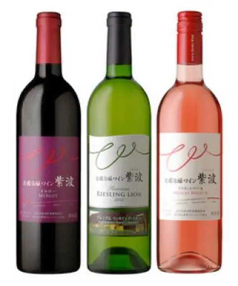
Shiwa Town is a grape producing region that accounts for half of Iwate Prefecture's production.
Tsuki no Wa Local Sake
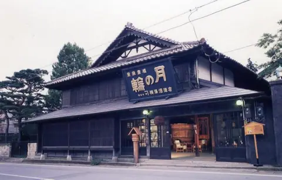
We continue to be particular about the ingredients we use, such as using suitable rice from Iwate Prefecture and naturally farmed rice.
Yamaya Skunk Cabbage
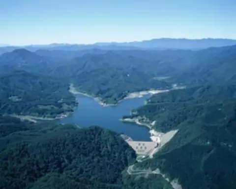
The skunk cabbage in the Yamaya district in the northeast of Shiwa Town is located at an altitude of 250 meters, so it usually blooms later than in the flatlands, from late April to early May.
Koenji Temple
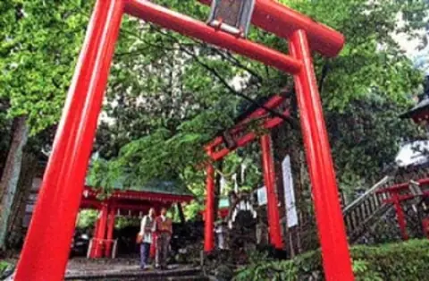
Koenji Temple. Kouenji.
Sunfarm Cherry & Berry Garden
You can enjoy cherry picking and blueberry picking at a farm surrounded by nature.
Shiwa Rose Garden
Three minutes by car from Roadside Station Shiwa, the rose garden spreads out on a hillside overlooking the majestic Mount Iwate to the north and the vineyards and rice fields of the Akazawa district to the south.
Akasawa hydrangea road
If you go around it, you will find a hydrangea road that is about 5km long.
Funakubo Cave
This is Yokoana limestone cave, which is designated as a historic site by the prefecture.
Mt. Azumaneyama
This mountain (928.4 m above sea level) is located to the west of Shiwa Town, about 15 km south of Morioka City, and is the southernmost mountain (928.4 m above sea level) of the Shiba Sanzan, which is connected to Mt.
Upside-Down Oak of Shogen-in Temple
Kashiwa is originally a deciduous broad-leaved tree with an upright trunk and can reach a height of over 20 meters, but this Kashiwa does not stand upright, but instead splits into four trunks at the ground level, each of which creeps along the ground…
Shigari Wake Shrine
Nicknamed Akaishi-san since ancient times, he has been widely revered as the guardian deity of industrial prosperity, river and maritime safety, and traffic safety.
Shiwa Inari Shrine and Shiwa Old Inari Shrine
Shiwa Inari Shrine and Shiwa Old Inari Shrine
Nomura Kodo / Araebisu Memorial Museum
Nomura Kodo, the creator of "Heiji Zenigata," was also active as a classical music critic called "Araebisu.
Shiroyama Park
Shiroyama Park is a small hill in the center of the town. It is said that the Takamizuji Castle, the residence of the Shiba clan, was built here during the medieval period, making it a site of great historical value.
Toge no Eki Shiwa Furusato Center and Restaurant Budo no Ki
Pass Station Shiwa Furusato Center Restaurant Grape Tree
Shiwa Grape-Picking Vineyard
The Sahiuchi district of Shiwa Town, which is surrounded by green hills, is one of the leading grape producing regions in Iwate Prefecture.